01Temple / Aerial
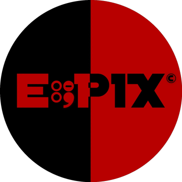
E∶PIX — Photography & Film Studio, India
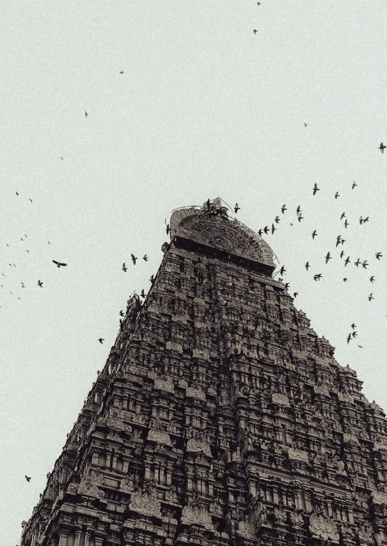
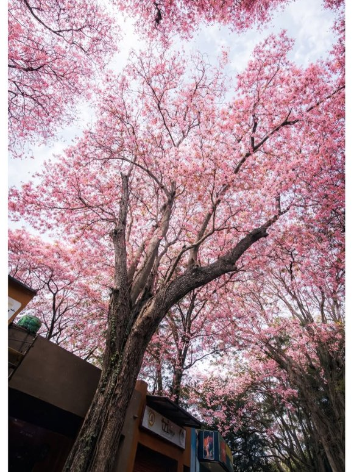
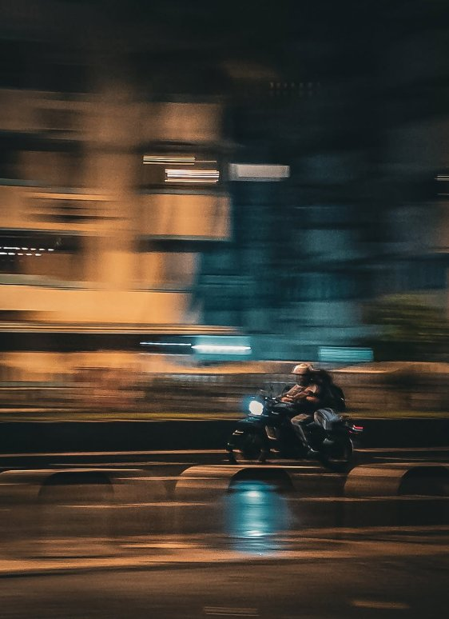
Stories shot from the ground — temples, streets, nights, and the people beneath them.
E∶PIX partners with brands, spaces, and people to plan, shoot, and deliver visual stories end to end — campaigns, products, places, events, and films. Considered, cinematic, and made to last longer than the feed.
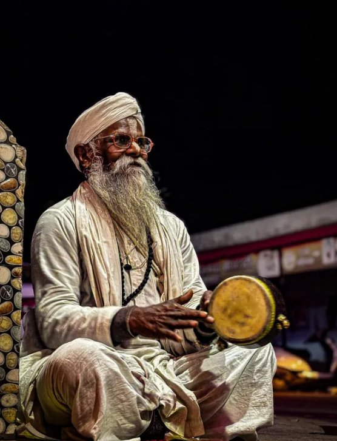
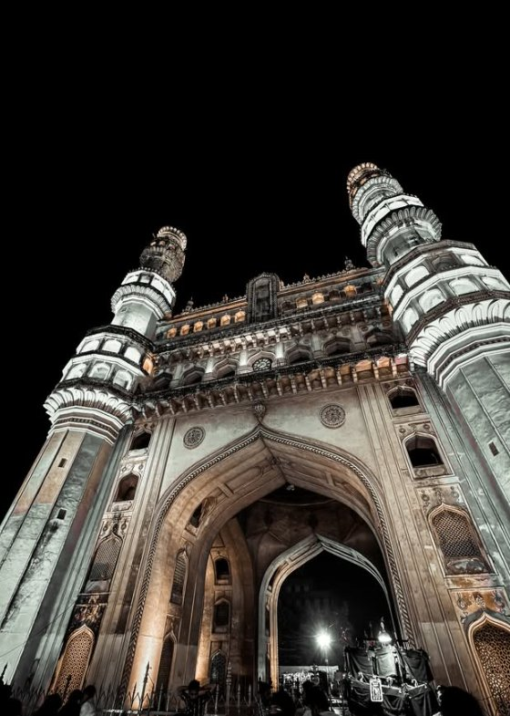
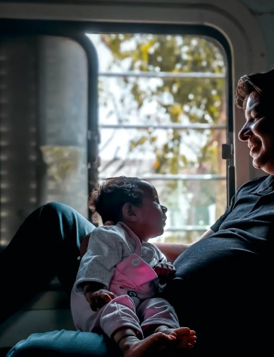
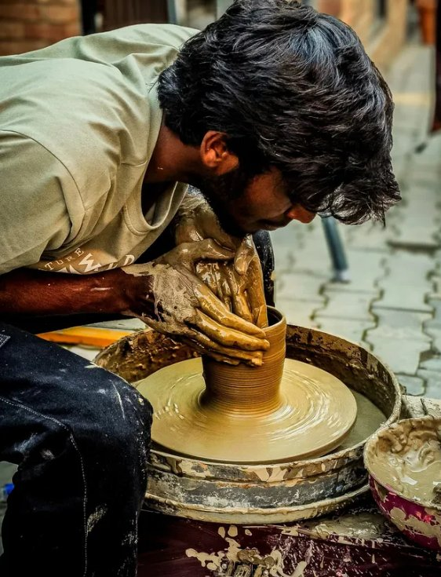
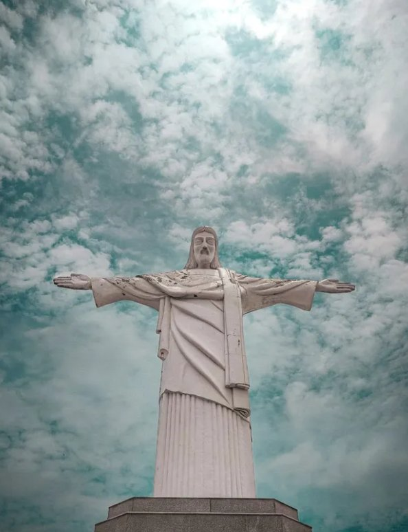
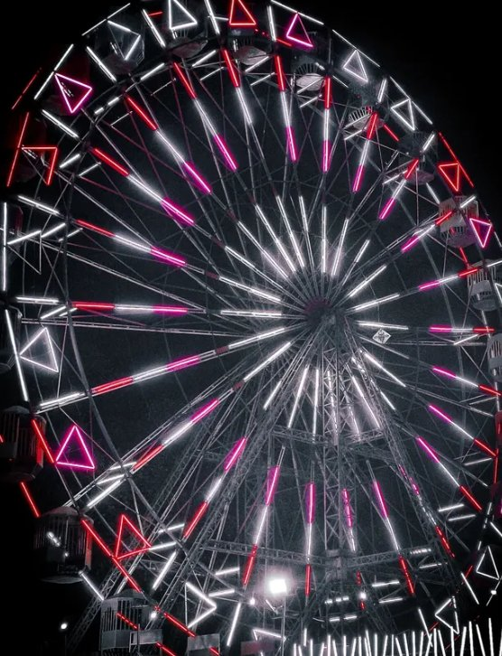
Mela — after hours
Keep scrolling →
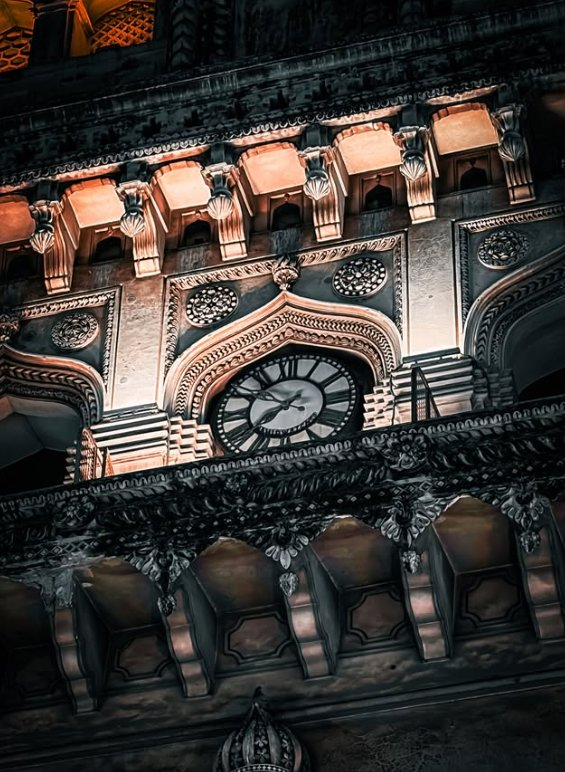
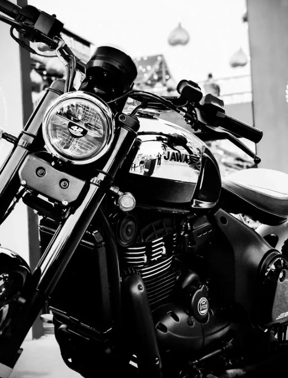
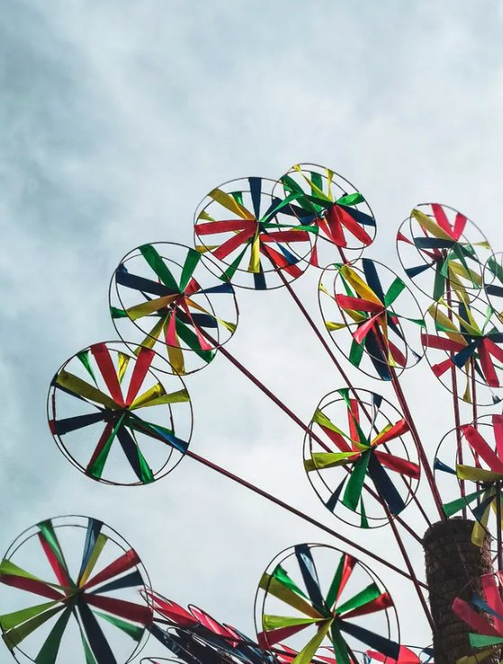
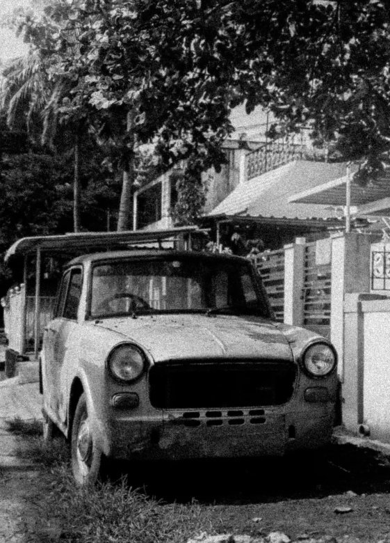
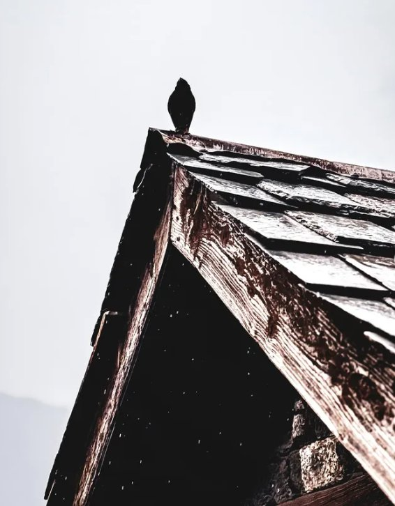
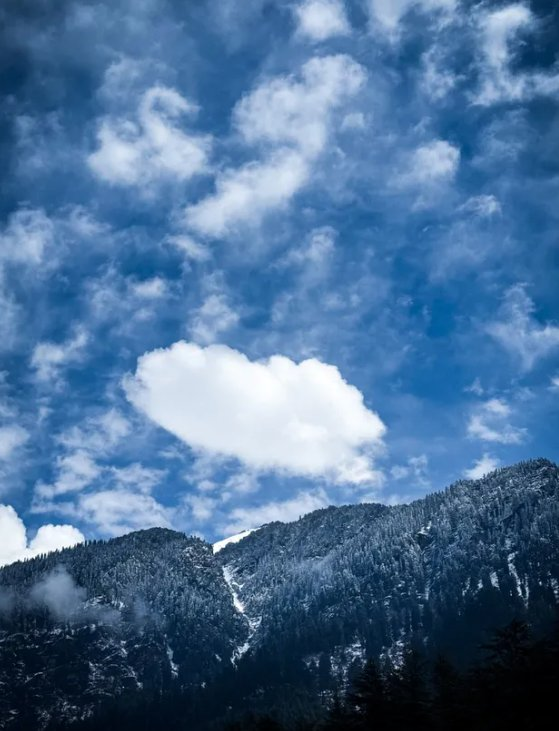
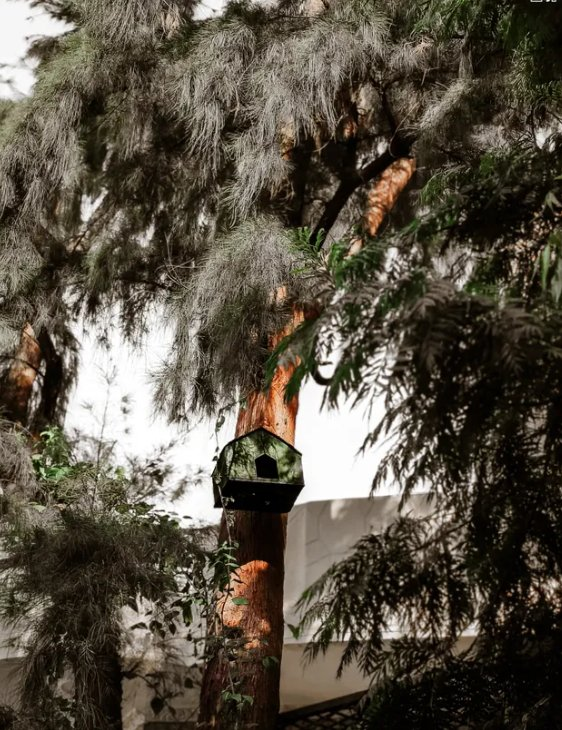
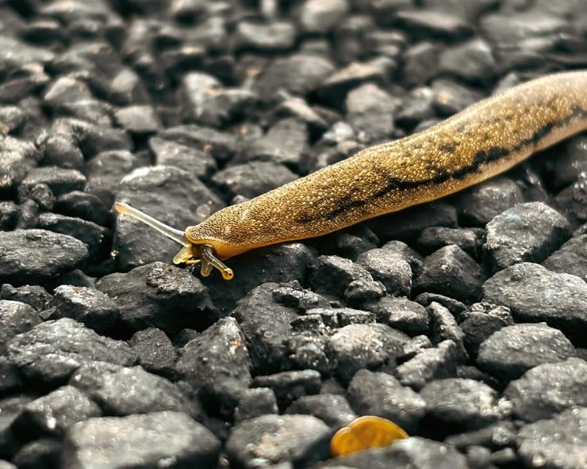
E∶PIX began as an archive on Instagram — a habit of looking up at towers, skies, and canopies, and looking closely at the hands and faces beneath them. Today we bring that same eye to commissioned work for brands, architects, hospitality, and culture.